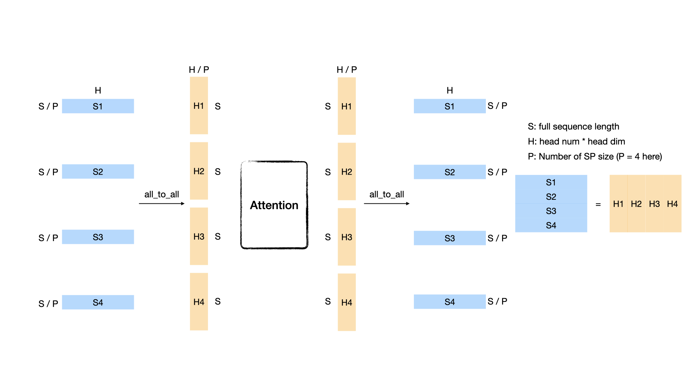
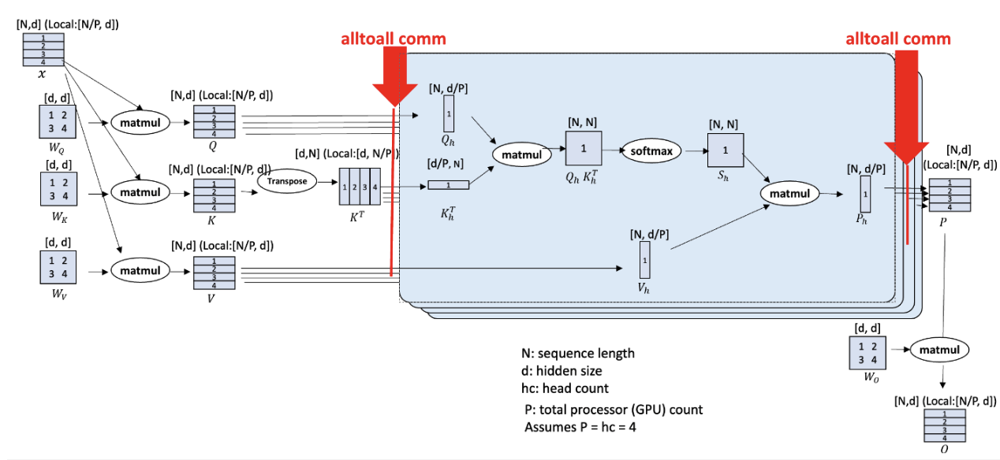

Long-Sequence Training Using Ulysses
Table of Contents
📚 Overview
In this tutorial, we introduce the implementation of DeepSpeed-Ulysses for efficient long-sequence training in VeOmni. The Ulysses method optimizes memory usage by splitting both the input tensor and intermediate activations along the sequence dimension. This innovative approach significantly enhances memory efficiency, enabling the training of models with longer sequence lengths.
Reference Paper: DeepSpeed Ulysses: System Optimizations for Enabling Training of Extreme Long Sequence Transformer Models
🚀 Quick Start
To enable Ulysses, users can specify the accelerator.ulysses_size parameter in the configuration file or the launch command:
bash train.sh tasks/train_vlm.py configs/multimodal/qwen2_5_vl/qwen2_5_vl_fsdp1.yaml \
--model.model_path YOUR_MODEL_PATH \
--data.train_path YOUR_DATA_PATH \
--train.accelerator.ulysses_size 4
Currently, we have supported Ulysses on the following models:
Language models:
LlaMa
Qwen2.5
Qwen3.5 (hybrid softmax + linear attention, requires transformers v5)
Multimodal models:
Qwen2-VL
Qwen2.5-VL
🔍 Dive into Ulysses Sequence Parallelism
Sequence Parallel (SP) serves as a prevalent strategy to handle long sequences that exceed the memory limit of a single GPU. Ulysses use all-to-all collective communication operations to implement SP with attention.
What is all_to_all?
Suppose we have P GPUs and a sequence whose shape is [S, H], where N denotes the sequence length and d represents the hidden size (head num * head dim). Each GPU initially holds the sequence's [S/P, H] partition. After performing an all_to_all communication, each GPU will get a head-splitting sequence whose shape is [S, H/P]. An illustration figure when P = 4 is as follows:

DeepSpeed-Ulysses
We use the all_to_all based sequence parallelism which is proposed by DeepSpeed, named DeepSpeed-Ulysses.

(Image source: DeepSpeed Ulysses: System Optimizations for Enabling Training of Extreme Long Sequence Transformer Models)
The figure above shows the overall architecture of DeepSpeed-Ulysses. It only introduces two extra all_to_all communications in the attention module while it does not modify other parts such as normalization and MLP. The input sequence is first evenly divided across the GPUs. The first all_to_all communication gathers the query, key, and value ([S/P, H]) along the sequence dimension and scatters the sequence in the head dimension ([S, H/P]). After the attention part, another all_to_all is performed to transfer the attention output ([S, H/P]) from head-sliced back to sequence-sliced ([S/P, H]). DeepSpeed-Ulysses is attention agnostic since it gathers the whole sequence dimension during attention computation. Thus, it can be easily used with FlashAttention. However, it is constrained by the number of attention heads since the sp size should be divided evenly by head_num. Note that DeepSpeed-Ulysses does not impact the memory consumed by the model states. To support large sequence-length training with a large language model, DeepSpeed-Ulysses can be integrated with ZeRO and FSDP.
Communication Analysis
The communication volume transmitted per link for an all-to-all for aggregate message of size M over P GPUs can be estimated as $M(P-1)/P^2$. For a transformer model with hidden size H, the sequence length of S, and parallelism degree of P, and let $\mu = (P-1)/P$. DeepSpeed-Ulysses performs all-to-all for the QKV projections with an aggregate message size of $3SH$ before the attention computation, which introduces $3SH\mu/P$ communication volume; and another all-to-all for output context projection with a size Nh for each transformer layer, which introduces $SH\mu/P$ communication volume. Therefore, DeepSpeed sequence parallelism incurs an aggregate communication volume per link of $4SH\mu/P = 4M(P-1)/P^2$.
⚙️ Core API
gather_seq_scatter_heads
A method to do all-to-all before attention, make sure the sequence is full for attention score computation.
def gather_seq_scatter_heads(
x: torch.Tensor,
seq_dim: int,
head_dim: int,
unpadded_dim_size: int = 0,
async_op: bool = False,
) -> Tensor
Args:
x: tensor to be synced
seq_dim: sequence dim that will be gathered
head_dim: head dim that will be scattered. "head" is a concept from Multi-head Attention or Group Query Attention
unpadded_dim_size: the full sequence size before padding and sharding
async_op: if True, will return a torch._C._distributed_c10d.Work object, users can use this arg to do comm-compute overlap
gather_heads_scatter_seq
A method to do all-to-all after attention, transforming the activation from head-split to sequence-split.
def gather_heads_scatter_seq(
x: torch.Tensor,
head_dim: int,
seq_dim: int
) -> Tensor
Args:
x: Tensor to be synced
head_dim: head dim that will be gathered
seq_dim: sequence dim that will be scattered
reduce_sequence_parallel_loss
A method to reduce loss within the sequence parallel group, re-scale the loss according to the number of valid tokens.
def reduce_sequence_parallel_loss(
loss: torch.Tensor,
num_valid_tokens: torch.Tensor
) -> torch.Tensor
Args:
loss: loss tensor to be reduced
num_valid_tokens: the number of valid tokens in current rank
🛠️ Support Ulysses for a New Model
Typically, enabling Ulysses for a new model involves three key steps:
Create a sequence parallel group based on the specified Ulysses parallel size.
Shard input sequences across the sequence parallel groups.
Modify the model’s attention and loss computation to support Ulysses.
In VeOmni, the first two steps are automated. Users only need to specify the accelerator.ulysses_size parameter, and VeOmni will handle the creation of sequence parallel groups and the sharding of input data. This allows users to focus solely on step 3—modifying the model’s architecture to implement Ulysses sequence parallelism.
To make this process easier, we provide an abstract pseudo-code example as a reference for implementing Ulysses in a new model:
from veomni.distributed.sequence_parallel import (
gather_seq_scatter_heads_qkv,
gather_heads_scatter_seq,
reduce_sequence_parallel_loss,
)
# Step1: Create a sequence parallel group
# VeOmni will construct a sequence parallel group based on the parallel size
# Step2: Shard input sequences
# Suppose we get an input x of shape [batch_size, seq_len, dim]
# we first shard x among sequence parallel groups
# now x is of shape [batch_size, seq_len/n, dim] on each sp rank
# Step3 (part1): modify attention computation
x = self.qkv(x) # [batch_size, seq_pad/n, dim]
x = gather_seq_scatter_heads(x, seq_dim=1, head_dim=2) # [batch_size, seq_len, dim/n]
...
output = F.scaled_dot_product_attention(q, k, v, ...).reshape(...)
...
output = gather_heads_scatter_seq(output, head_dim=2, seq_dim=1) # [batch_size, seq_pad/n, dim]
# Step3 (part2): reduce loss after model forward
loss = loss_fct(logits, labels)
loss = reduce_sequence_parallel_loss(loss, num_valid_tokens)
return loss
🧩 Implementation Details: Data Pipeline and Model Interaction
Understanding how sequence parallelism data flows through the VeOmni pipeline is critical for adding SP support to new models and for debugging shape mismatches. This section documents the full lifecycle of tensors from the data collator to the model forward pass.
Data Collator: SequenceParallelCollator
When SP is enabled, MainCollator appends a SequenceParallelCollator to its pipeline
(see veomni/data/data_collator.py). This collator handles three operations in order:
Label shifting — shifts
labelsleft by 1 token (for next-token prediction).SP padding and slicing — for each key in the batch:
Pad the sequence to be evenly divisible by
sp_size(usingsp_pad_valuefromDataCollateInfo).Slice the sequence for the current SP rank (
tensor.narrow(dim, rank * chunk, chunk)).
Flash attention kwargs — computed from
position_idsbefore slicing it.
The default DataCollateInfo for each key:
Key |
|
|
Notes |
|---|---|---|---|
|
True |
0 |
Sliced to local length |
|
True |
-100 |
Sliced to local length |
|
False |
1 |
Padded but NOT sliced (always all-ones for FA) |
|
False |
0 |
Sliced after FA kwargs are computed from it |
Key ordering detail: position_ids is intentionally excluded from the general slicing loop.
It is first used at full length to compute cu_seq_lens_q/k via add_flash_attention_kwargs_from_position_ids,
then sliced afterward. This ensures the FA kwargs describe the full packed sequence boundaries, which
is needed by the flash attention kernel after the Ulysses all-to-all gathers the full sequence.
After the collator, the model receives:
Tensor |
Sequence length |
Description |
|---|---|---|
|
|
Local token IDs |
|
|
Local shifted labels |
|
|
Local positions (correct absolute values) |
|
|
Full-length all-ones mask |
|
varies |
Computed from full |
Softmax Attention (Flash Attention) SP Flow
For standard softmax attention layers (e.g., Qwen3_5Attention), Ulysses SP is handled
internally by flash_attention_forward in veomni/ops/flash_attn/__init__.py.
The flow through a softmax attention layer:
hidden_states [B, S_local, D] # already local from collator
-> QKV projection # [B, S_local, num_heads, head_dim]
-> apply_rotary_pos_emb(q, k, cos, sin) # RoPE on local-length q/k
-> flash_attention_forward:
gather_seq_scatter_heads(q,k,v) # [B, S_full, local_heads, head_dim]
flash_attention_kernel(...) # attention on full sequence, local heads
gather_heads_scatter_seq(output) # [B, S_local, num_heads, head_dim]
-> output projection # [B, S_local, D]
Important: Position embeddings (cos, sin) must match hidden_states length (S_local).
Since position_ids is already sliced by the collator, rotary_emb(hidden_states, position_ids)
produces local-length position embeddings — no additional slicing is needed.
Note on Qwen3/Qwen3-MoE: These models use LigerKernel's
apply_rotary_pos_embwhich tolerates mismatched sequence lengths between q/k and cos/sin. Qwen3.5 uses the standard HuggingFace implementation, which requires exact size match. When adding SP to a new model, always check which RoPE implementation is active.
Loss Reduction
When SP is enabled, each rank computes loss on its local sequence shard. The loss must be
reduced across the SP group, re-scaled by the number of valid (non-padding) tokens per rank.
This is handled by reduce_sequence_parallel_loss or by the fused loss in the model's forward
method. See the Core API section above for details.
🔧 Linear Attention Ulysses (GatedDeltaNet)
Hybrid models like Qwen3.5 alternate between softmax attention layers and linear attention
layers (GatedDeltaNet). While softmax attention SP is handled transparently by
flash_attention_forward, linear attention layers require explicit Ulysses SP logic in
their forward method because they use a different attention mechanism (recurrence-based, not
score-based) with additional components like causal conv1d.
Why Linear Attention Needs Special Handling
No shared flash attention path — GatedDeltaNet uses
chunk_gated_delta_rulefrom FLA, not flash attention.Causal conv1d — operates along the sequence dimension. Each rank only has a local sequence shard, so the conv1d must run on the full sequence with appropriately sharded weights.
Per-head parameters —
A_loganddt_biasare indexed by head, so they need slicing for local heads.
GatedDeltaNet Ulysses SP Flow
hidden_states [B, S_local, D]
-> QKV + z + b + a projections
IF ulysses_enabled:
-> split mixed_qkv into Q, K, V and reshape to [B, S_local, num_heads, head_dim]
-> gather_seq_scatter_heads(Q, K, V, b, a) # [B, S_full, local_heads, ...]
-> flatten heads + concat Q,K,V # [B, S_full, local_conv_dim]
-> _get_local_conv1d_weight(rank) # shard conv1d weights for local heads
-> causal_conv1d(mixed_qkv, local_weight, cu_seqlens=cu_seq_lens_q)
-> split and reshape with local head counts
-> slice A_log, dt_bias for local V-heads
-> chunk_gated_delta_rule(q, k, v, g, beta, cu_seqlens=cu_seq_lens_q)
-> gather_heads_scatter_seq(attn_out) # [B, S_local, num_v_heads, head_v_dim]
-> gated_norm(attn_out, z) # z was NOT all-to-all'd
-> output projection
ELSE:
-> standard (non-SP) forward path
Conv1d Weight Sharding
The conv1d weight has shape [Q_channels | K_channels | V_channels, kernel_size].
Under Ulysses SP, each rank only processes local heads, so the conv1d weight must be
sharded to extract only the channels corresponding to local Q, K, V heads:
def _get_local_conv1d_weight(self, ulysses_rank, local_key_dim, local_value_dim):
w_full = self.conv1d.weight.squeeze(1) # [conv_dim, kernel_size]
k_off = ulysses_rank * local_key_dim
v_off = ulysses_rank * local_value_dim
w_q = w_full[k_off : k_off + local_key_dim]
w_k = w_full[key_dim + k_off : key_dim + k_off + local_key_dim]
w_v = w_full[2 * key_dim + v_off : 2 * key_dim + v_off + local_value_dim]
return torch.cat([w_q, w_k, w_v], dim=0)
Key Difference: z Is NOT All-to-All'd
The gating signal z is used after the attention output is gathered back to local
sequence layout (gather_heads_scatter_seq). Since z starts at [B, S_local, num_v_heads, head_v_dim]
and the gathered attention output is also [B, S_local, num_v_heads, head_v_dim], they
match without any all-to-all on z. This saves one all-to-all communication.
cu_seq_lens_q Usage
cu_seq_lens_q describes the packed sequence boundaries (computed from full position_ids before
slicing). After the all-to-all gathers the full sequence, cu_seq_lens_q correctly describes the
sequence boundaries for the causal conv1d and chunk attention kernels.
Head Divisibility Requirement
Both num_k_heads and num_v_heads must be divisible by ulysses_size. For GQA (grouped query
attention) where num_v_heads > num_k_heads, the GQA repeat ratio num_v_heads // num_k_heads
is preserved after dividing both by ulysses_size.
Testing
Tests for GatedDeltaNet Ulysses SP are in tests/parallel/ulysses/test_qwen3_5_gated_deltanet_ulysses.py:
Conv1d weight slicing — single-GPU, validates that sliced conv1d output matches the corresponding slice of full conv1d output.
SP forward/backward equivalence — multi-GPU, compares SP partitioned outputs and gradients against a non-SP baseline.
SP forward determinism — multi-GPU, verifies repeated forward passes produce identical outputs.
Non-SP forward determinism — single-GPU, baseline determinism check.
⚡ Async Ulysses CP
We also support Async Ulysses which further improves performance by overlapping communication and computation, reducing communication latency and improving hardware utilization.
Asynchronous Ulysses

VeOmni extends the original Ulysses implementation with asynchronous communication capabilities, further improving performance by overlapping communication and computation.
Performance Benefits
By overlapping communication and computation, Async Ulysses:
Reduces idle time during communication operations
Lowers end-to-end training time
Maintains nearly the same memory efficiency as original Ulysses
Enabling Async Ulysses
To enable Async Ulysses, simply set the accelerator.enable_async parameter to True:
Notice: Async Ulysses works when accelerator.ulysses_size > 1.
bash train.sh tasks/train_vlm.py configs/multimodal/qwen3_vl/qwen3_vl_dense.yaml \
--train.accelerator.ulysses_size 4 \
--train.accelerator.enable_async true
API
async_ulysses_qkv_projection
An asynchronous method to perform QKV projection and all-to-all communication, overlapping computation and communication.
def async_ulysses_qkv_projection(
hidden_states: torch.Tensor,
seq_dimension: int,
head_dimension: int,
q_weight: torch.Tensor,
q_bias: Optional[torch.Tensor],
k_weight: torch.Tensor,
k_bias: Optional[torch.Tensor],
v_weight: torch.Tensor,
v_bias: Optional[torch.Tensor],
norm_type: Optional[str] = None,
norm_q_weight: Optional[torch.Tensor] = None,
norm_q_bias: Optional[torch.Tensor] = None,
norm_k_weight: Optional[torch.Tensor] = None,
norm_k_bias: Optional[torch.Tensor] = None,
normalized_shape: Optional[Union[int, torch.Size]] = None,
eps: float = 1e-5,
unpadded_dim_size: int = 0,
head_dim: int = 0,
group: Optional[ProcessGroup] = None,
) -> Tuple[torch.Tensor, torch.Tensor, torch.Tensor]
Args:
hidden_states: Input hidden states
seq_dimension: Sequence dimension
head_dimension: Head dimension
q_weight: Query projection weight
q_bias: Query projection bias
k_weight: Key projection weight
k_bias: Key projection bias
v_weight: Value projection weight
v_bias: Value projection bias
norm_type: Normalization type ("rmsnorm" or "layernorm")
norm_q_weight: Query normalization weight
norm_q_bias: Query normalization bias
norm_k_weight: Key normalization weight
norm_k_bias: Key normalization bias
normalized_shape: Normalization shape
eps: Normalization epsilon
unpadded_dim_size: Unpadded dimension size
head_dim: Head dimension size
group: Process group (optional)
async_ulysses_output_projection
An asynchronous method to perform output projection and all-to-all communication.
def async_ulysses_output_projection(
hidden_states: torch.Tensor,
seq_dimension: int,
head_dimension: int,
proj_weight: torch.Tensor,
proj_bias: Optional[torch.Tensor],
unpadded_dim_size: int = 0,
group: Optional[ProcessGroup] = None,
) -> torch.Tensor
Args:
hidden_states: Input hidden states
seq_dimension: Sequence dimension
head_dimension: Head dimension
proj_weight: Projection weight
proj_bias: Projection bias
unpadded_dim_size: Unpadded dimension size
group: Process group (optional)
Enabling Async Ulysses
To enable Async Ulysses for an existing model, you need to:
Check if Async Ulysses is supported for your model (currently supported for Qwen3VL Dense)
Set
accelerator.enable_async=Truein your training configurationEnsure you're using Flash Attention 2.0 and Ulysses Context Parallelism is enabled
Verify that your hardware supports asynchronous operations
Async Ulysses is currently available for the following models:
Qwen3VL Dense
Support for more models will be added in future releases.